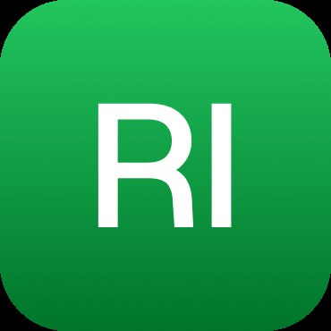
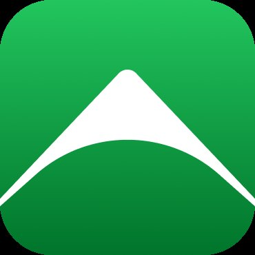
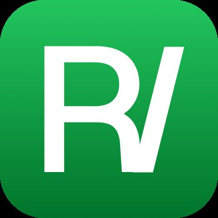
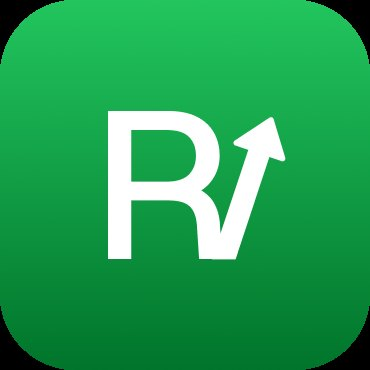
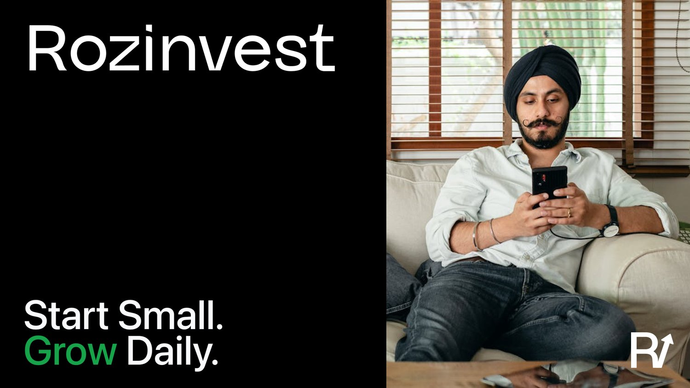
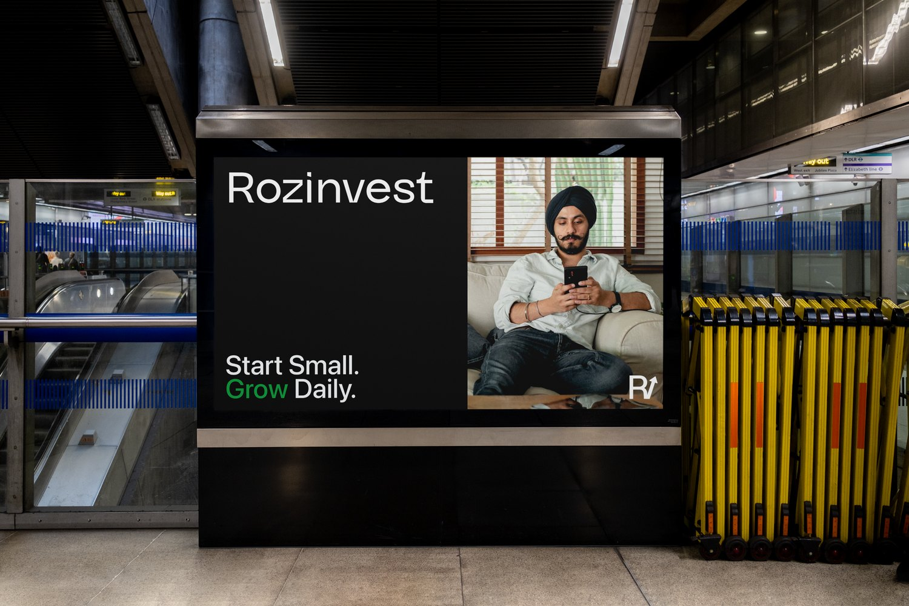

Brand identity · 2026
Rozinvest — Type & Visual Identity
In brief
Rozinvest is expert-guided mutual fund investing for Gen Z. It needed an identity that says "your money is safe here" and "this was made for you" in the same breath.
01 — Overview
A visual language for first-time investors
Rozinvest tells you what to do with your money — no confusing charts, no jargon. The task: define the colour palette, select typefaces for marketing and in-app use, explore app icon directions, and deliver brand mockups across digital and outdoor touchpoints.
02 — Colour system
Rooted in market psychology, not trends
In Indian fintech, green isn't a creative choice — it's a cultural signal. Green means growth, profitability, "markets are up." Blue signals institutional trust. The palette leverages these existing associations rather than fighting them.
Primary · green (growth)
Secondary · blue (trust)
Neutrals
Accent · campaigns & marketing
Why no purple in the core palette? Purple has become strongly associated with the crypto market in India — a space carrying declining trust and volatility stigma. For a mutual fund platform targeting cautious first-time investors, anchoring on green (growth) and blue (trust) was the strategically defensible choice. Purple was retained only as a campaign accent.
03 — Typography
Two faces, two jobs
A brand that lives between Instagram reels and portfolio value tables needs two typefaces that never compete. One grabs attention. One delivers numbers without friction.
Marketing · headlines — Guton
Guton brings a distinctive, modern voice that elevates brand personality across campaigns. Expressive yet balanced — effective for headlines and social content that need to stand out without losing clarity.
Functional · in-app — SF Pro
SF Pro delivers exceptional clarity for dense financial data and mobile-first interfaces. Its neutral yet refined character reinforces trust — critical for an app handling people's money.
04 — Icon exploration
Four directions, one winner
The app icon needed to hold up at 16px on a browser tab and 512px on the App Store. Four concepts explored — all built on the "R" letterform with visual metaphors for growth and momentum.




05 — In context
From screen to street
The identity was stress-tested across real-world touchpoints — at home screen scale on a device, and at environmental scale in a transit station citylight.


06 — Conclusion
A system built for trust at first sight
Rozinvest's visual identity bridges institutional credibility and Gen Z approachability. Every decision — from green as the primary cultural signal to SF Pro for data legibility — was anchored in how Indian first-time investors already perceive finance, not in design trends.
5
Colour families
2
Typefaces
4
Icon directions